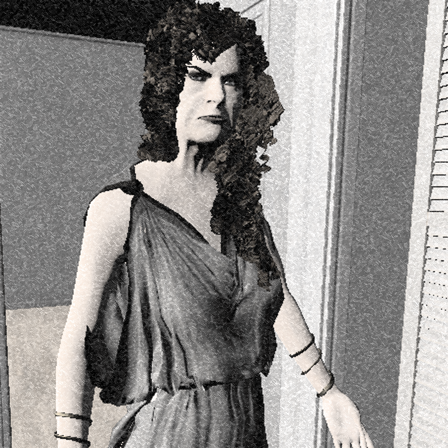

Arachne was a weaver in the Lydian city of Hypaipa who was widely praised for her special skills.
She defeated Athena in a weaving contest, whereupon she became enraged and ripped up Arachne's work.
Arachne, now fully fearing the goddess's revenge, hanged herself.
But Athena did not let her die, but loosened the rope around her neck and sprayed a poison,
after which the rope turned into a spider's web and Arachne into a weaving spider.
So Arachne and her descendants were doomed to weave for all eternity.
And she is still weaving today. So be on your guard against her spider webs, in which she can trap you.
You can see her spider webs with the video camera. She can be defeated
in the temple with silver bullets.

To Destroy
Shotgun (Silver Ammunition) in The Temple
Evidence